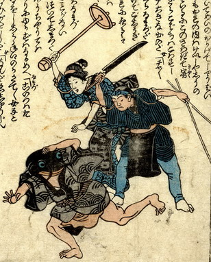

鯰が料理人と芸者に襲われ、逃げている。鯰は波の模様が入った墨色の着物を着て、片手で頭を覆い走っている。料理人は鉢巻きを締め、黒い前掛けをつけて、右手で刃渡りの長い包丁を振り上げ、左手に菜箸をつかんでいる。芸者は燭台を振り上げて、鯰に殴りかかろうとしている。
出典：親書誌：U426_nichibunken_0160：（地震小咄；ジシンコバナシ）／日付：2010／資源識別子：U426_nichibunken_0160_0002_0000
Copyright (c)2010- International Research Center for Japanese Studies, Kyoto, Japan. All rights reserved.